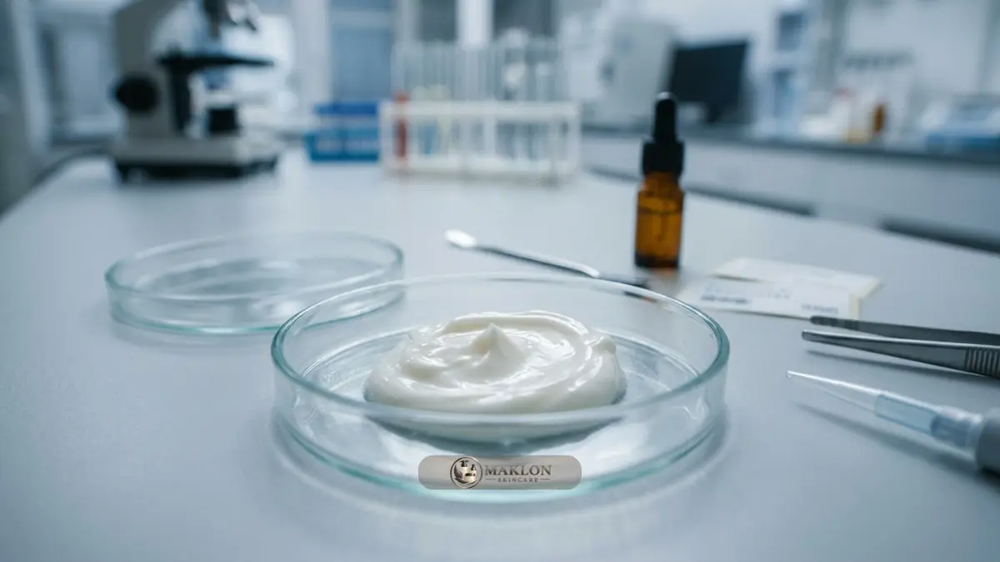
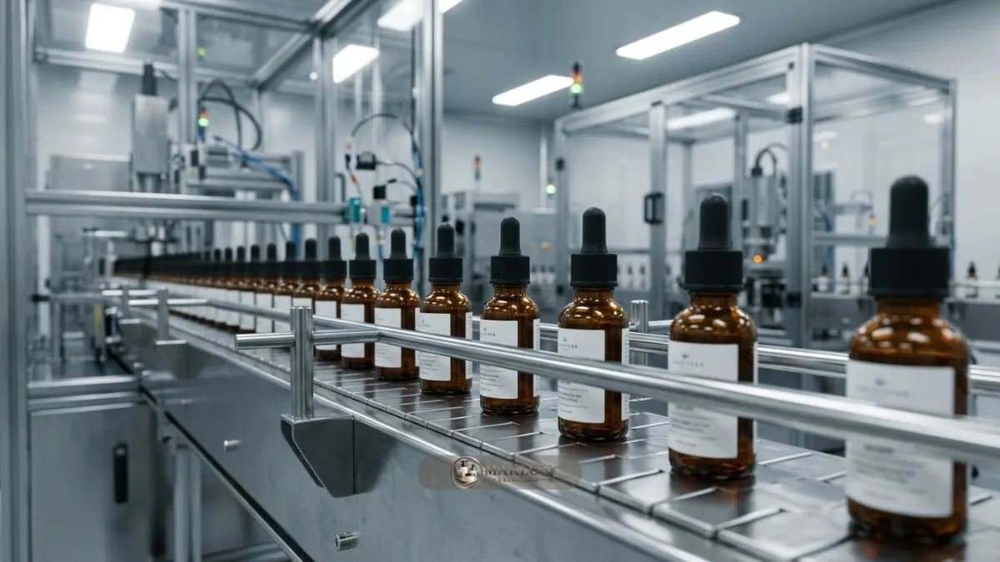

Uji laboratorium skincare adalah rangkaian pengujian mutu, keamanan, dan stabilitas produk, mulai dari cemaran mikroba hingga ketahanan formula, agar kualitas setiap batch tetap konsisten.
- Peraturan BPOM 16 Tahun 2024 menetapkan batas cemaran kimiawi, termasuk merkuri tidak lebih dari 1 mg/kg.
- Uji utama meliputi cemaran mikroba patogen, logam berat, stabilitas fisikokimia, efektivitas pengawet, dan iritasi kulit.
- Uji stabilitas membantu menentukan masa simpan (shelf life) dan kecocokan formula dengan material kemasan.
- QC yang baik berjalan sepanjang proses: pemeriksaan bahan baku, kontrol pengisian di pabrik, hingga inspeksi produk jadi.
- Informasi ini bersifat panduan umum, di mana keputusan teknis wajib melibatkan apoteker penanggung jawab dan laboratorium terakreditasi.
Apa Saja Jenis Uji Laboratorium untuk Produk Skincare?
Uji laboratorium skincare terdiri dari uji cemaran mikroba, logam berat, stabilitas, efektivitas pengawet, dan keamanan kulit, dengan batas cemaran mengacu pada Peraturan BPOM.
Peraturan BPOM Nomor 16 Tahun 2024 tentang Batas Cemaran dalam Kosmetik menjadi landasan hukum utama yang mengatur ambang batas cemaran mikroba dan zat kimia berbahaya.
Beberapa batas ketat yang tercantum di dalamnya meliputi: kandungan merkuri (Hg) tidak boleh lebih dari 1 mg/kg, timbal (Pb) maksimal 20 mg/kg, arsen (As) maksimal 5 mg/kg, kadmium (Cd) maksimal 5 mg/kg, serta 1,4-dioxane tidak lebih dari 10 mg/kg.
Untuk cemaran biologis mikroba pada kosmetik kulit, Angka Lempeng Total (ALT) serta Angka Kapang dan Khamir (AKK) dibatasi ketat maksimal 1.000 koloni per gram atau per mL sediaan.
Secara garis besar, spektrum pengujian laboratorium dikelompokkan ke dalam 4 kategori kunci:
- Uji keamanan mutu: Memastikan sediaan bebas dari cemaran mikroba patogen serta residu logam berat beracun.
- Uji kestabilan sediaan: Pengamatan fisikokimia seperti perubahan pH, viskositas, dan warna selama masa penyimpanan.
- Uji efektivitas sistem pengawet: Menilai daya tahan pengawet menekan pertumbuhan bakteri saat produk telah dibuka konsumen.
- Uji keamanan pemakaian kulit: Pengujian potensi iritasi atau sensitisasi kulit manusia di bawah supervisi dermatolog.
Pemilihan jenis uji diselaraskan dengan bentuk sediaan produk. Produk yang digunakan pada area sensitif sekitar mata atau berkadar air tinggi menuntut pengawasan mikroba yang jauh lebih intensif.
Bagaimana Uji Cemaran Mikroba dan Logam Berat Dilakukan?
Uji cemaran mikroba menghitung koloni bakteri, kapang, dan khamir dalam sampel, sedangkan uji logam berat mengukur kadar merkuri, timbal, arsen, dan kadmium memakai instrumen analisis.
Bagaimana uji cemaran mikroba bekerja?
Sampel sediaan produk diencerkan secara bertingkat, ditanam pada media agar pertumbuhan yang steril, lalu diinkubasi dalam inkubator bersuhu terkontrol selama beberapa hari.
Jumlah koloni yang berkembang biak kemudian dihitung secara presisi dan dinyatakan dalam satuan cfu (colony forming units) per gram atau per mililiter.
Pengujian ini juga mencakup verifikasi bebas mikroba patogen spesifik seperti Staphylococcus aureus, Pseudomonas aeruginosa, dan Candida albicans.
Bagaimana uji logam berat bekerja?
Sampel sediaan kosmetik didestruksi terlebih dahulu memakai larutan asam pekat agar ikatan matriks senyawa logam dapat terurai sempurna.
Kadar logam kemudian diukur menggunakan instrumen analitik canggih seperti Spektrofotometer Serapan Atom (AAS) atau Inductively Coupled Plasma (ICP-MS).
Hasil uji yang melebihi batas legalitas menandakan produk tidak layak diedarkan dan memerlukan penelusuran sumber kontaminasi pada air proses, kemurnian bahan baku, atau kebersihan mesin pengisian.
Apa Itu Uji Stabilitas Skincare dan Mengapa Penting?
Uji stabilitas skincare menilai apakah tampilan, aroma, pH, kekentalan, dan kualitas produk tetap terjaga selama penyimpanan dan pemakaian, sehingga masa simpan dapat ditentukan.
Formula kosmetik yang terlihat sempurna pada hari pertama pembuatan dapat mengalami penurunan mutu beberapa minggu kemudian.
Gejala kerusakan stabilitas dapat berupa pemisahan lapisan minyak dan air (breaking), penggumpalan endapan, perubahan warna menjadi kecokelatan, atau aroma sediaan yang berubah tengik.

Parameter fisikokimia yang wajib dievaluasi secara berkala meliputi:
- Sifat organoleptik: Kejernihan warna sediaan, konsistensi bau wewangian, dan homogenitas tekstur.
- Tingkat keasaman (pH) dan viskositas: Memastikan kestabilan daya alir cairan agar nyaman diaplikasikan pada kulit wajah.
- Uji sentrifugasi: Memutar sediaan emulsi pada kecepatan ribuan rpm untuk menguji ketahanan fase dispersi terhadap pemisahan.
- Interaksi wadah kemasan: Memantau ada tidaknya korosi wadah, keretakan botol, atau perubahan tekanan di dalam botol kemasan.
Metode pengujian yang umum mencakup uji real-time pada suhu kamar dan uji stabilitas dipercepat (accelerated test) dalam chamber suhu 40°C serta uji siklus suhu beku-panas (freeze-thaw cycle).
Hasil uji stabilitas ini menjadi masukan vital saat merancang botol, seperti yang dibahas dalam panduan desain packaging skincare yang cocok dengan formula.
Apa Itu Uji Efektivitas Pengawet dan Uji Keamanan Kulit?
Uji efektivitas pengawet menilai kemampuan sistem pengawet menahan pertumbuhan mikroba, sedangkan uji keamanan kulit menilai potensi iritasi produk pada penggunaan normal.
Formulasi kosmetik berbahan dasar air (water-based) sangat rentan menjadi sarang perkembangbiakan jamur dan bakteri bila tidak dibentengi sistem pengawet yang mumpuni.
Pada uji efektivitas pengawet (antimicrobial preservative effectiveness test), sampel sediaan sengaja diinokulasi sejumlah galur mikroba uji, lalu penurunan populasinya diamati selama interval 28 hari.
Sementara uji keamanan pemakaian kulit, seperti uji tempel tertutup (patch test) pada relawan di bawah pantauan dokter spesialis kulit, membantu memetakan potensi reaksi hipersensitivitas.
Hasil uji klinis ini tidak menjamin 100 persen bebas alergi bagi semua orang, sehingga pencantuman petunjuk uji tempel mandiri pada kemasan tetap merupakan praktik etis terbaik.
Bagaimana Standar QC Produksi Skincare Diterapkan?
Standar QC produksi skincare diterapkan melalui CPKB, spesifikasi bahan baku, pemeriksaan selama proses, pengujian produk jadi, dan pencatatan batch yang dapat ditelusuri.
Cara Pembuatan Kosmetika yang Baik (CPKB) merupakan acuan operasional wajib bagi fasilitas manufaktur kosmetik di Indonesia yang selaras dengan ISO 22716.
Pabrik maklon yang bereputasi tinggi menerapkan lima pilar kendali mutu terpadu:
- Inspeksi bahan baku masuk: Setiap drum bahan baku diperiksa kesesuaian nomor batch dan dokumen Certificate of Analysis (CoA) dari supplier.
- Pengendalian proses (In-Process Control): Suhu pengadukan, durasi homogenisasi, dan pH sediaan dicatat pada lembar kerja batch.
- Pelepasan produk jadi: Sediaan hanya boleh dikemas dan dikirim setelah seluruh pengujian mikrobiologi batch tersebut dinyatakan lolos (released).
- Dokumentasi batch record: Seluruh riwayat formulasi tersimpan rapi dan dapat ditelusuri balik apabila kelak timbul komplain pelanggan.
- Penyimpanan retained sample: Sampel sediaan pertinggal disimpan dalam ruangan bersuhu sejuk sebagai arsip pembuktian hukum selama masa edar produk.
Alokasi pos biaya pengujian dan quality control ini harus selalu diperhitungkan ke dalam kalkulasi harga pokok, sebagaimana diulas di panduan cara menghitung HPP skincare.
Bagaimana Memilih Laboratorium Pengujian Skincare yang Tepat?
Laboratorium pengujian skincare yang tepat memiliki akreditasi relevan, metode uji jelas, laporan hasil yang dapat ditelusuri, dan pengalaman menguji sediaan kosmetik.
Hal-hal yang wajib Anda cermati saat memilih mitra laboratorium analitik:
- Akreditasi resmi ISO/IEC 17025: Pastikan ruang lingkup pengujian kosmetika telah diakreditasi oleh Komite Akreditasi Nasional (KAN).
- Metode acuan standar: Tanyakan apakah prosedur pengujian mengacu pada Farmakope Indonesia, SNI kosmetik, atau standar AOAC internasional.
- Keabsahan sertifikat CoA: Pastikan sertifikat hasil uji memuat stempel resmi, tanda tangan analis berwenang, dan tanggal pengujian yang jelas.
- Kecepatan pengerjaan (lead time): Bandingkan estimasi durasi pengujian mikroba rutin (5-10 hari kerja) dan rincian tarif per parameter uji.
- Pemahaman matriks sediaan kosmetik: Pengujian sediaan krim kental dan gel emulsi menuntut teknik preparasi sampel yang spesifik agar data akurat.
Bila Anda bekerja sama dengan perusahaan maklon, mintalah transparansi tertulis mengenai uji apa saja yang sudah tercover dalam paket produksi dan uji apa yang memerlukan penanganan terpisah.
Apa Kesalahan Umum dalam Pengujian dan QC Skincare?
Kesalahan umum pengujian skincare meliputi menguji sampel tidak representatif, melewati uji stabilitas, mengubah formula tanpa uji ulang, dan tidak menyimpan retained sample.
Beberapa kekeliruan lain yang kerap merugikan keberlangsungan brand antara lain:
- Hanya menguji sampel prototipe racikan skala dapur, bukan sampel yang dihasilkan langsung dari mesin tangki produksi massal.
- Mengganti vendor bahan baku aktif tanpa melakukan pengujian ulang terhadap interaksi kestabilan sediaan.
- Menunda pengujian cemaran hingga mendekati tanggal peluncuran promosi sehingga bila timbul kegagalan batch jadwal rilis menjadi berantakan.
- Tidak menyimpan dokumen CoA dan batch record secara terorganisir sehingga kesulitan membuktikan kepatuhan saat inspeksi audit mendadak.
Biasakan membuat arsip berkas dokumentasi satu pintu untuk setiap nomor batch yang memuat data formula, hasil uji laboratorium, tanggal pengemasan, dan catatan perubahan teknis.
Kesimpulan Praktis: Menjamin Keamanan dan Reputasi Mutu
Uji laboratorium dan QC yang disiplin melindungi konsumen dari bahaya cemaran, menjaga nama baik brand Anda di pasaran, dan memastikan kualitas produk konsisten dari batch pertama hingga seterusnya.
Poin kuncinya: patuhi batas cemaran Peraturan BPOM 16/2024, jalankan uji mikroba, logam berat, dan uji stabilitas sesuai jenis sediaan, terapkan kontrol CPKB secara menyeluruh, serta arsipkan dokumen batch record secara tertib.
Informasi pada artikel ini bersifat edukasi umum. Untuk menentukan rincian protokol pengujian sediaan Anda, diskusikan bersama apoteker formulator dan laboratorium berwenang.
Lihat panduan tahapan bisnis secara makro pada artikel cara memulai bisnis skincare dari ide hingga produk.
Produksi Aman dengan Jaminan Kualitas CPKB
Ingin memastikan produk skincare Anda lolos uji laboratorium dan siap mengantongi izin edar resmi? Diskusikan kebutuhan uji stabilitas formula dan kontrol mutu produksi Anda bersama tim kami melalui konsultasi maklon skincare agar standar mutu brand Anda terlindungi sempurna sejak batch pertama.